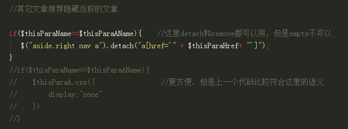
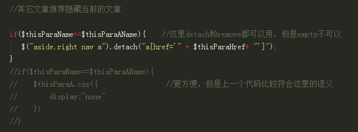
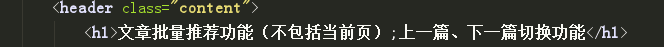
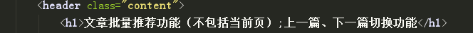
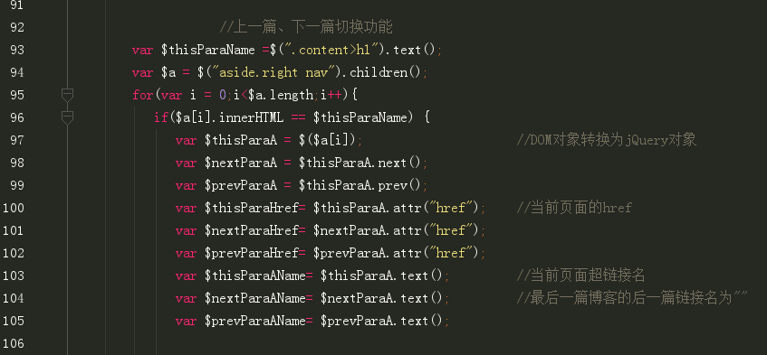

1.文章批量推荐功能（不包括当前页）
放一下部分代码
html:

jQuery:
 

detach,remove都是清除当前元素，所以它们之前的括号里应该写当前元素，在这里都可以使用.
detach与remove不同的是，所有绑定的时间、附加的数据等都会保留下来
而empty是清除后代元素，而且貌似括号里填什么都没意义，这里不能用
上一篇、下一篇切换功能
放一下部分代码
html:
 

jQuery:
